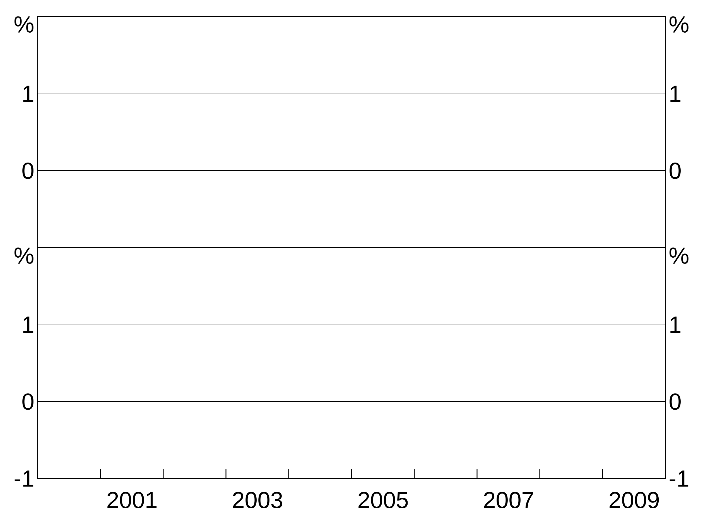

Getting started with arphit
2019-05-10
arphit.RmdIntroduction
This vignette details the first steps for how to create arphit graphs. Not all elements that you can add to graphs are covered in this guide. More detailed descriptions of all of the plotting options (including those discussed here) are available in the plotting options vignette.
Basics
First steps
The very first step to using arphit is to import it into your workspace:
If you get an error because you haven’t yet installed arphit, see the ‘Installation’ section of the README.
Data
arphit can accept data.frames, tibbles and tss. If you are making scatter graphs, or categorical graphs, you’ll be using the first two. If you are making time series graphs, you might be using ts, but you can also use data.frames or tibbles with a date column. If you have long data, you’ll be using tibbles or data.frames.
For this guide, we’re going create the following three random datasets for all our examples:
simple_data <- data.frame(date = seq.Date(from = as.Date("2000-03-01"),
length.out = 10,
by = "quarter"),
y = rnorm(10))
long_data <- data.frame(date = rep(seq.Date(from = as.Date("2000-03-01"),
length.out = 10,
by = "quarter"), 2),
y = rnorm(20),
y2 = rnorm(20),
state = c(rep("A", 10), rep("B", 10)))
scatter_data <- data.frame(x = rnorm(10), y = rnorm(10))Layouts, panels and types of graphs
Layouts
Each layout has a number of panels where series can be placed. Right hand side axes count as separate panels in some layouts. Panels are numbered from left to right, top to bottom.
There are nine supported layouts. THe plotting options guide details all 9 options. For this getting started guide, we’ll focus on just two:
- One-panel “1”. This is the default if you do not supply a value for
layout. Despite its name this layout has two panels. Panel “1” corresponds to the left axis; panel “2” corresponds to the right axis.

- Two-panel horizontal “2h”. This layout has four panels. Panels “1” and “2” are the left and right axes of the top panel. “3” and “4” for the bottom.

Creating a graph
The first part of creating an arphit ggplot-like graph is to create one and define the layout:
(If omitted, layout defaults to “1”.)
Here we are assigning the graph to the variable p. Graphs are created by adding layers and other elements (such as titles). These are added using the + operator. To show the graph, we call agg_draw(p). Alternatively, if you are working interactively, you can simply type p (or whatever you have assigned your graph to) at the console to display it.
arphitgg can optionally take a data and aes (short for aesthetic) argument. These provide defaults that layers will inherit if the layer does not specify its own. This is very useful when you have a single dataset you want to use in multiple layers, as it saves you from specifying it for each layer.
Aesthetic
An aesthetic is the definition of a layer. It specifies the x and y variables for the layer.

If your data are a ts, the x aesthetic does not need to specified, it is automatically the dates in the time series.
Groups
An aesthetic can also specify a group variable. This is used when your data is in long form and you have multiple observations on each x observation, corresponding to different variables. For instance, x might be the date column, y the column containing observations of the unemployment rate and group the column containing state identifiers.
Facets
An aesthetic can also specify a facet variable. facets work like groups, except that facets are split across panels (and so layers ignore if you give them a panel). facets are covered in more detail in the plotting options guide. Data can have both groups and facets.
Layers
A layer is a series (or group of series) built from the same aesthetic. In arphit, layers must be assigned to a panel.
Layers take four arguments: 1. Data 2. Aesthetic 3. Panel (defaults to “1” if not supplied) 4. Colour (optional)
There are three types of layers, agg_line, agg_point and agg_col. These are used nearly identically to produce line, scatter and column graphs respectively:
p <- arphitgg(layout = "2h") +
agg_line(data = long_data, aes = agg_aes(x = date, y = y, group = state), panel = "1") +
agg_col(data = long_data, aes = agg_aes(x = date, y = y, group = state), panel = "3")
p <- arphitgg(layout = "1") +
agg_point(data = scatter_data, aes = agg_aes(x = x, y = y), panel = "1")
Layers will inherit data and aesthetic (or parts of the aesthetic) if these are left null in the layer specification. This is handy to save you from having to repeat yourself:
p <- arphitgg(long_data, aes = agg_aes(x = date, group = state), layout = "2h") +
agg_line(aes = agg_aes(y = y), panel = "1") +
agg_col(aes = agg_aes(y = y2), panel = "3")
Series colours and other attributes
Specifying line, bar or point (depending on layer type) colours for series is done when creating a layer. For instance:
p <- arphitgg() +
agg_line(data = simple_data, aes = agg_aes(x = date, y = y), colour = RBA["Red1"])This colour is applied to all series in the layer. This is less helpful when you have a group variable, since they will all show up as the same colour (which is unlikely to be what you want). E.g. this is not helpful:
p <- arphitgg() +
agg_line(data = long_data,
aes = agg_aes(x = date, y = y, group = state),
colour = RBA["Red1"])
To specify for different colours for different series in a grouped layer, you can instead specify a vector of colours:
p <- arphitgg() +
agg_line(data = long_data,
aes = agg_aes(x = date, y = y, group = state),
colour = c(RBA["Red1"], RBA["Blue4"]))
(NB: arphit will cycle through the supplied vector colours if there aren’t enough in the vector to cover the number of series in the layer.)
To see the full list of availble colours type vignette("rba-colours", package = "arphit").
Alternatively, you can use any colour that R recognises.
Other attributes
You can control line type, line width and points markers with lty, lwd and pch. These work just like colour. See the plotting options guide for more detail.
Titles
Titles and subtitles are added using agg_title and agg_subtitle respectively. The only required argument is the text for the title/subtitle:

To add panel titles, specify a panel identifier in the agg_title or agg_subtitle call:
Units
You can specify the units for your graph using agg_units This can be used either with or without a panel specifier. If called without a panel specifier, the units are applied to all panels, otherwise the units are added only to specified panel:

Sources and footnotes
Adding sources and footnotes is done using agg_source and agg_footnote. You can pass in a single text string, or a vector of multiple strings. You can add as many agg_source/agg_footnote as you like:
p <- arphitgg() + agg_source("Source 1") +
agg_source(c("Source 2 (as a vector)", "Source 3 (vectors are easy!")) +
agg_footnote("This is my first footnoote") +
agg_footnote("This is a second footnote")